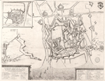
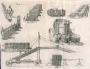
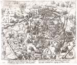
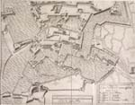

OOSTENDE VERLOREN, SLUIS GEWONNEN, 1604
Tentoonstelling in de Universiteitsbibliotheek van 12 augustus - 12
september 2004
Samenstelling: Dirk de Vries
Met bijdragen van Charles van den Heuvel, Anton van der Lem en Piet Lombaerde
Oostende afgesneden, belegerd, opgegeven en ingenomen: 1599-1604
Piet Lombaerde
Inleiding
Een der vermaardste episodes uit het midden van de Tachtigjarige oorlog (1568-1648) is de belegering van Oostende. De bloedige ende strenge belegeringhe der Stadt Oostende, in Vlaenderen maakt deel uit van de talrijke pogingen van de Spaans-Habsburgse vorsten om de Nederlanden maximaal terug onder hun gezag te plaatsen. Vooral na de opstand van 1572-1578 zouden grote delen van de Nederlanden zich aansluiten bij het calvinistische bestuur van de Staatsen. Onder leiding van de Italiaanse veldheer Alexander Farnese, in dienst van koning Filips II, werden tussen 1583 en 1592 bijna alle opstandige steden en gebieden in de Zuidelijke Nederlanden heroverd, maar Oostende, Bergen-op-Zoom en Venlo bleven in handen van de Staatse legers.
Oostende, dat sinds 1572 onder Staats gezag stond, baarde de Spaanse overheerser echter heel wat zorgen, omdat vanuit deze strategisch gelegen Noordzeehaven talrijke uitvallen en plundertochten in het Vlaamse achterland, en vooral in het Brugse Vrije, werden opgezet.
Een eerste poging om Oostende in te nemen werd zonder succes in 1583 door Alexander Farnese ondernomen. Vanaf 1599 werd de opstandige havenstad echter omsingeld en ingesloten door een aantal fortificaties, die samen twee kringen rondom de stad vormden. Het zwakke punt was echter de afsluiting vanuit zee, daar de aartshertogelijke vloot slechts over vier oorlogsschepen beschikte, waarvan er twee onbruikbaar waren.
Het beleg overvloedig gedocumenteerd
Over de talrijke wapenfeiten en de verschillende fasen van de meer dan drie jaar durende belegering die uiteindelijk tot overgave van de stad leidde, vloeide reeds heel wat inkt. Drie vrij vroege en belangrijke gedrukte bronnen over het relaas van dit beleg zijn: een vrij zeldzame anonieme druk in folio, uitgegeven in zowel Duits, Frans als Engels, met als titel Belägerung der Statt Ostende. IOURNAL: Tagregister und eigentliche beschreibung…, in 1604 op de markt gebracht; vervolgens het standaardwerk van Henrick van Haestens, De Bloedige ende strenge Belegeringhe Der Stadt Oostende/ in Vlaenderen, uitgegeven te Leiden in 1613,
| Vignet op de titelpagina van Henrick van Haestens, De Bloedige ende strenge Belegeringhe Der Stadt Oostende in Vlaenderen, Leiden 1613 (446 B 7). |
en ten slotte een deels aan stens verwant journaal van Philip Fleming, Oostende Vermaerde Belegheringhe, gedrukt in Den Haag in 1621. Deze laatste uitgave is bijzonder interessant, omdat Fleming de persoonlijke secretaris was van de opeenvolgende gouverneurs die te Oostende verbleven. Hij was dus zeer goed ingelicht over de gebeurtenissen die het verloop van het beleg en de inname bepaalden.
Ook bevatten deze werken beeldmateriaal in overvloed. Doordat het beleg van deze Noordzeestad tegen eenieders verwachtingen steeds langer uitviel, werden in talrijke journalen, op nieuwskaarten en in historische publicaties de gecommentarieerde gebeurtenissen en wapenfeiten rijkelijk geïllustreerd. Vrijwel de meest originele afbeeldingen zijn terug te vinden in het zopas vermelde werk Belägerung der Statt Ostende uit 1604.
|  | De belegering van Oostende in 1604, met aanduiding van de afsnijdingen en het ‘Nieuwe Troje’ (Uit: A. Sanderus, Flandria Illustrata, opgenomen in J. Blaeu, Toonneel der Steden, 1649 (Coll.BN P 73 N41). |
Het daarin opgenomen situatieplan van de belegerde stad, van de hand van Walter Morgan Wolff en Floris Balthasar, is één der fraaiste gravures. Daarop werden eveneens geschutslijnen van de artillerie der belegaars en der belegerden aangegeven. In een variant op dit plan, toegevoegd aan de Franse en Engelse vertaling, prijkt ook een afbeelding van een verplaatsbare brug, die in 1604 door de aartshertogelijke troepen werd ingezet.
Wat de iconografie van plattegronden van het belegerde Oostende meer in het algemeen betreft, zijn er drie basisreeksen te onderscheiden. De eerste reeks geeft de oudste versterkingen weer vanuit de zee gezien. Het Noordzeestrand loopt evenwijdig aan de onderzijde van het blad waarop de voorstelling van de gebastioneerde stad wordt weergegeven. De oudste voorstellingen hiervan zijn in manuscript. Het betreft een tekening uit 1593, behorend tot de verzameling van de markies van Salisbury te Hatfield, thans bewaard in het British Museum, en de zogenaamde spionagetekening uit 1600, voortkomend uit de verzameling van George Legge, baron van Darthmouth en eerste artilleriemeester van de Engelse koningen Karel I en Jacobus II, en thans bewaard in de kaartencollectie van de Koninklijke Bibliotheek in Brussel. Ook een afbeelding van de belegerde stad in 1601, verschenen in De Leone Belgico van Michael Aitsinger in 1606, sluit bij deze voorstellingswijze aan. Wel dient opgemerkt te worden dat op deze prent de omwallingen op een fantasierijke wijze zijn weergegeven. De latere gravure van de stad met al haar versterkingen en afsnijdingen, aanvankelijk voorgesteld op een gravure van Floris Balthasar met gedicht van Hugo Grotius, werd achteraf ook opgenomen in Flandria Illustrata van Antonius Sanderus uit 1641 en sluit bij deze eerste reeks aan. Al deze voorstellingen geven een duidelijk beeld van het oude stadsdeel met de westelijke haven.
Bij een tweede reeks wordt de stad met al haar versterkingen vanuit het binnenland weergegeven. Op deze voorstellingen gaat de aandacht vooral uit naar de situering van de vestingstad in haar omgeving en naar de complexiteit van vlieten, kreken en versterkingen. Meermaals worden op deze prenten de kringen van forten en schansen, die door de belegeraar tussen 1598 en 1604 werden opgetrokken, ook afgebeeld. Zowel de prenten van Baptista van Doetecum als de afbeeldingen van Lodovico Guicciardini, Georg Braun en Frans Hogenberg, en van Jacques Horenbault passen in deze reeks. Hetzelfde geldt voor gravures uit 1602 tot 1604 van Hans I Wiericx. Ingenieur Pierre Le Poivre heeft eveneens twee ingekleurde pentekeningen van de belegerde stad volgens deze voorstellingswijze gemaakt.
Een derde reeks is de meest interessante en geeft het best de stad en haar belegeringssituatie weer. Deze reeks ontleent haar inspiratie aan de oudere manuscriptkaart van Jacob van Deventer uit ca. 1562 (de versterkingen waren toen echter nog niet gebouwd). Het merkwaardige aan deze voorstellingswijze is de oriëntatie van de bovenzijde van de kaart naar het noorden, waardoor zowel de kustlijn als de stad in schuine richting worden afgebeeld. De prenten die tot deze derde reeks behoren, werden echter alle over 180° geroteerd, zodat de stad en haar directe omgeving vanuit de zee worden waargenomen. De gravures van Jan en Baptista van Doetecum uit 1601-1602, en van Georg Keller uit 1602, het eerder vermelde plan van Wolf en Floris Balthasar en de prent van Oostende in Samuel Marolois’ Architecture militaire tant offensive que défensive, Den Haag 1615, horen tot deze reeks.
Maar ook bestaan er enkele tekeningen van de belegerde stad vanuit het kamp van de aartshertogelijke troepen gezien. Deze afbeeldingen zijn eerder zeldzaam: de havengeul ligt dan bovenaan de kaart, de ‘Grote Kat’ ligt nu onder de stad. Een mooie voorstelling hiervan wordt in het Archivio di Stato te Turijn bewaard. Een veel grootschaligere tekening is terug te vinden in het Antwerps stadsarchief en is bijzonder interessant, omdat ze ook de situatie van al de aartshertogelijke legers en hun bondgenoten weergeeft.
Daarnaast bestaat nog een groot aantal detail- en technische tekeningen, zelfs ook perspectivische gezichten, die ons bijzonder goed inlichten over de wijze waarop de krijgsverrichtingen plaatsvonden. Ook op schilderijen wordt heel wat informatie over de belegering geboden. Tot de reeks van vijfentwintig veldslagen tijdens de oorlogen van Filips II in de Nederlanden behoort ook het schilderij van een anonieme meester waarop een panoramische voorstelling vanuit het kamp van aartshertog Albrecht in de richting van de belegerde stad Oostende voorkomt. Juist dit schilderij is in de Nederlanden (Brussel, Koninklijke Musea voor Schone Kunsten) gebleven, alle andere – inclusief Sluis – behoren tot de collecties van het Escurial (Monasterio de San Lorenzo). De ‘Grote Kat’ wordt bijzonder treffend afgebeeld op een schilderij van Pieter Snaeyers, bewaard in het Stedelijk Museum het Prinsenhof (Delft). Een gedetailleerde voorstelling van de stad met haar afsnijdingen is terug te vinden op de achtergrond van een portret van de aartshertog Albrecht, ca. 1604 (Brugge, Provinciaal Museum van het Brugse Vrije).
Deze enorme productie aan iconografie van het belegerde Oostende, en dit slechts voor een viertal jaren in het bestaan van deze kleine havenstad, hoeft ons echter niet te verbazen. Men mag immers niet vergeten dat zowat de hele West-Europese wereld bij deze belegering betrokken was. Het katholieke kamp der belegeraars stond onder leiding van de Spaans-Habsburgse aartshertogen Albrecht en Isabella. Het vormde de kern van een geallieerd leger waaraan Italianen, Walen, Bourgondiërs, Spanjaarden en Duitsers deelnamen.
De stad Oostende werd verdedigd door een Staats garnizoen, bijgestaan door Engelsen, Fransen en Schotten. De tegenstelling tussen beide kampen wordt duidelijk geïllustreerd op een vignet van het titelblad van Haestens’ publicatie. Daarop staat de Bataafse leeuw, symbool van de Verenigde Nederlanden, strijdlustig opgesteld op de wallen van de belegerde stad Oostende, tegenover de leeuw van de Zuidelijke Nederlanden, die postvat achter het artilleriegeschut van de Spaans-Habsburgse agressor.
Troje, Carthago en het zwaar versterkte Oostende
Op politiek en militair vlak was de belegering interessant omdat de legermacht van de aartshertogen, die aanvankelijk uit ca. zeventienduizend manschappen bestond en nadien tot ca. vijfendertigduizend man werd opgetrokken, tegenover zich het garnizoen van de belegerde stad had, dat slechts ca. vierduizend zevenhonderd manschappen telde. In 1601 zou zelfs het laagste aantal manschappen binnen in de stad Oostende bereikt worden, namelijk een drieduizendtal. Wat het inwonersaantal vóór de aanvang van de belegering betrof, dit bedroeg bij benadering een vierduizendtal. Tijdens de belegering werden echter de meeste bewoners naar Sluis en Zeeuwsch-Vlaanderen verscheept en bleven er slechts ca. zeshonderd mannen en jongelingen ter plaatse om de stad mee te verdedigen. Ondanks de eerder lage cijfers wat de belegerden betreft, werd de stad toch als ‘oninneembaar’ beschouwd. Dit kwam door haar gunstige ligging vlakbij de Noordzee, en door haar achterland, dat uit talrijke schorren en inundeerbare polders bestond. Een aanval van de belegeraars was enkel bij laagtij mogelijk. Bovendien was deze relatief kleine havenstad volgens het Oudnederlands verdedigingssysteem versterkt. De Staatse ingenieur Hans Duyck had in opdracht van Willem van Oranje vanaf 1579 tot 1584 nieuwe versterkingen volgens het gebastioneerd type aangebracht, die zowel rond de stad als rond de westelijk gelegen haven en het oude stadsdeel waren opgetrokken. Hij werd opgevolgd door Matthijs Tasson, die de versterkingen voltooide. Abraham Andriessen, die tijdens het calvinistisch bestuur te Antwerpen werkzaam was, werd samen met een honderdtal ‘pioniers’ naar Oostende gestuurd. Verder bereikte nog in 1596 kapitein-ingenieur Andries de la Croix samen met een vendel gravers en twaalfhonderd soldaten deze stad in volle transformatie. Ingenieur David van Orliens was veruit de belangrijkste ingenieur vanaf 1600 en zou tijdens bijna de hele duur van de belegering het ‘Nieuwe Troje’ blijven versterken en bewapenen.
Menig auteur vergeleek de situatie van de stad met die van het antieke Troje, waar eveneens een wanverhouding aanwezig was wat de troepensterkten betreft en waar de stad een tienjarige belegering onderging. Sinds de inname van Troje zou Oostende de meest ophefmakende belegering zijn. Maar ook de vergelijking met Carthago werd sporadisch gemaakt.
In de Nassauschen laurencrans uit 1610 staat over deze drie heroïsche belegeringen en innamen het volgende chronogram:
‘t Belegh van Oostende passeert Troye en Carthago
Oostends langh belegh, ‘t gewelt aldaer bedreven,
Met al die listigheyt, en mannelijcke feyten:
Soodanigh zijn, dat noch Troia, noch ‘t verheeven
Carthago, met daer om d’eer sullen durven pleyten.
Wel dient opgemerkt dat de naamgeving van het ‘Nieuwe Troje’ zowel terugslaat op de gehele stad als op de laatste afsnijding binnenin de stad, die in juni 1604 werd opgetrokken.
De allusie dat bij deze belegeringen krijgslisten werden bedreven, duidt voor Oostende vooral op de misleiding van de Oostendse gouverneur Francis Vere. In december 1601 kondigde hij eenzijdig een wapenstilstand af, onder voorwendsel krijgsgevangenen uit te wisselen. Maar zijn eigenlijk opzet was om heimelijk enkele zwaar bewapende Hollandse schepen met vijf vendels knechten uit Zeeland de haven binnen te loodsen, daar het aanwezige garnizoen in de stad zijn laagste aantal had bereikt. Toen deze operatie eenmaal voltrokken was, werd de strijd in alle hevigheid hervat. Aartshertog Albrecht was over deze list zeer verbolgen, en reageerde op 7 januari 1602 door een bestorming op de zuidwestelijke flank ter hoogte van de bolwerken Santhill en Porc-Epic. Daarvoor zette hij ca. zesduizend manschappen in. Het Oostendse garnizoen werd echter tijdig door zijn spionnen geïnformeerd. Gouverneur Vere, op aanraden van zijn secretaris Philip Fleming, sloeg een tweede maal toe en liet onverwachts de sluis van de Tuimeldijk volledig openen, waardoor een watervloed de troepen van de geallieerden overspoelde. Nagenoeg vijfentwintighonderd manschappen van de aartshertogelijke legers vonden de verdrinkingsdood. Aan Staatse zijde sneuvelden amper een veertigtal soldaten.
In verschillende journalen en publicaties wordt melding gemaakt van de ontdekking van een vrouwenlichaam tussen de Spaanse gesneuvelden. Zij was verkleed als een mannelijke krijger. Van Haestens schrijft: ‘…so is gevonden een jonge Spaensche Dochter ofte Vrouwe ghecleet in mans cleederen liggende dicht onder Santhill.’ Deze ‘amazone’ of ‘Crijchsdochter’ beroerde heel wat schrijvers. Francis Vere liet het voorval onderzoeken, maar zonder resultaat. Zulke verhalen treden bij belegeringen en veldslagen wel vaker op en worden verzonnen om de heldenmoed en vastberadenheid van de krijgers te benadrukken. Oostende toch ingenomen
Algemeen wordt aangenomen dat deze krijgslisten van Francis Vere een contraproductief effect hadden en de aartshertogen nog meer aanspoorden om de stad toch te blijven belegeren totdat ze zou capituleren. Maar de stad werd vanuit de zee ook tijdens de jaren 1602 en 1603 door Engelse en Hollandse schepen bevoorraad.
Dat de stad na een belegering van meer dan drie jaar en drie maanden toch werd ingenomen, heeft echter niets met een list als het ‘paard van Troje’ te maken, maar kan wel op een andere wijze verklaard worden.
Allereerst met de hardnekkigheid waarmee de belegeraar ten allen koste de stad wilde veroveren. Dit uit zich onder andere in de hoge dodentol aan beide zijden, ca. vijfenveertigduizend infanteristen aan aartshertogelijke zijde en ca. tweeënvijftigduizend aan de kant van de Staatsen, Engelsen en Oostendenaars. De hoge aantallen slachtoffers hebben zowel te maken met de vrij lange duur van de belegering zelf en met de bijna continue reeks aanvallen en tegenaanvallen die ermee gepaard gingen, als met het onophoudelijk aanvoeren van nieuwe manschappen bij zowel de belegeraars als de belegerden. Zo is het opvallend dat bij de overgave van de stad ca. eenzelfde aantal van vijfenveertighonderd garnizoenssoldaten de stad Oostende verliet als er aanwezig waren bij de aanvang van de belegering. Waarom voor deze hoge prijs aan mensenlevens werd gekozen, in plaats van voor een vroegtijdige beëindiging van deze bloedige krijgsverrichtingen, houdt eerder verband met de hoge politieke inzet dan met militair-strategische redenen. De ogen van zowat alle Europese hoven waren immers op deze gebeurtenissen gericht. Zoals reeds vermeld, ging het immers om een duel tussen de katholieke Spaanse Habsburgers en de protestantse afgescheurde Noordelijke Nederlanden, geholpen door Engeland en in mindere mate ook door Frankrijk. De Franse koning Hendrik IV, een katholiek, nam immers een dubbelzinnige houding aan, omdat hij vreesde dat zo’n grote troepenmacht van ca. dertig tot veertigduizend soldaten, die rondom de stad gelegerd waren, een reële dreiging voor de Noord-Franse steden kon vormen zodra Oostende gevallen was.
Een tweede oorzaak waardoor de zeehavenstad uiteindelijk haar goed verdedigde positie moest prijsgeven, houdt verband met enkele ongunstige geografische elementen. De belegeraar – vooral Ambrogio Spinola – heeft daar handig gebruik van weten te maken. Het betreft de zuidwestzijde van de stad, in het bijzonder het gedeelte tegenover de kustduinen van Mariakerke. Deze duinen lagen vrij hoog en werden door de natuurlijke werking van de overheersende zuidwestenwinden steeds verder met zand opgehoogd. Van daaruit had de aanvaller een goed platform om de stad continu te bestoken. Het werd aangevuld met de oprichting van de ‘Grote Kat’, een verhoogde observatiepost, maar daarop kon geen zwaar artilleriegeschut worden opgesteld. Dit vooruitgeschoven aarden gevechtsplatform was een realisatie van de Waalse kolonel Nicolas de Catris. Het bood ook maximale controle over de westelijke haventoegang.
Het enige verweer dat de Oostendenaars en hun bondgenoten aan deze nadelige situatie konden bieden, was het gebruik van het oudere retirata-systeem. Dit laatste zou dan ook in 1604 gebeuren, zoals hierna beschreven zal worden.
Misschien heeft uiteindelijk nog een diplomatieke beslissing de doorslag gegeven tot de opgave van Oostende. Op 25 augustus 1604 werd tussen Engeland en Spanje een vredesakkoord afgesloten. Als gevolg hiervan zou de stad niet meer bevoorraad worden door Engelse schepen. Daardoor zou Oostende duidelijk verzwakt worden en viel de verdediging ervan volledig op de schouders van het Staatse gezag. Zij hadden toen hun handen vol met de bewapening en versterking van het pas ingenomen Sluis.
Vernieuwingen in de vestingbouw en innovaties in aanvals- en verdedigingstechnieken?
De vraag kan gesteld worden of tijdens deze lange belegeringsperiode innovaties op het gebied van de krijgskunst en de vestingbouw werden gedaan. Heel wat veldheren en specialisten op het gebied van de ‘architectura militaris’ volgden immers aandachtig de gebeurtenissen, en uitvinders van aanvalstuigen boden zelfs gretig hun diensten aan. Henricus Hondius schrijft hier zelfs over: ‘…dit beleg was gelijck een Academie, oft hooge schole voor allerhande krijchslieden, als oock officiere, mede van Ingenieurs…’ Ook werd er verkondigd dat een verblijf van vier maanden tijdens het beleg kon beschouwd worden als een ‘universiteyt’ voor jongelingen die zich in het krijgsbedrijf wensten te bekwamen.
Een aantal Italiaanse schrijvers, dichters en ingenieurs die zich ophielden met dit beleg, hechtten bijzonder veel aandacht aan de uitvindingen op het gebied van aanvalstuigen. Deze tuigen werden vooral ontworpen voor de belegeraars en hadden tot doel de stad zo snel mogelijk te kunnen innemen. Een van deze ingenieurs en uitvinders was Pompeo Targone (1575 – ca. 1630). Hij was als ingenieur werkzaam voor paus Clemens VIII en vooral gespecialiseerd in belegeringen. Op verzoek van aartshertog Albrecht werd zijn kundigheid ook aangewend voor Oostende. In juni 1604 ontwierp hij een monumentale houten brug van vierhonderd voet hoog. Het ingenieuze van dit aanvalstuig bestond erin dat het verplaatsbaar was en aangedreven werd door middel van koorden, katrollen en paarden, zodat de hoge constructie tot vlak bij de in te nemen versterking kon gerold worden, zonder dat de belegeraar zich diende bloot te stellen aan de projectielen van de vijand. De aanvalstroepen konden zich immers beschermd opstellen achter een schuin geplaatst brugdek, terwijl het gehele gevaarte vooruit werd gerold. Als de brug eenmaal aan de voet van de vesting in positie was gebracht, kon een tweede en zelfs een derde brugdek over de vestingwal worden neergelaten. Zo konden de infanteristen over de hoofden van de belegerden, die op de wallen hadden post gevat, heen de stad binnen trekken. In een lofdicht werd deze uitschuifbare brug weliswaar geprezen, maar ze bleek toch niet zo efficiënt te zijn: ‘Ostend ein Kriegsschul / Hat uberstanden manchn fal / Man hat gebraucht manch Instrument / zu ubermeistern Ostend’.
In Pompeo Giustiniano’s Delle guerre di Fiandra libri VI, Antwerpen 1609, en in een verhandeling van de Parmezaan Alexander Cavalca worden zowel Targone’s instrumenten als die van militair ingenieur Giuseppe Gamurini geïllustreerd en beschreven.
|  | Aanvalstuigen en versterkingen van mijngangen, grachten en zeedijken, uitgewerkt door Pompeo Targone en G. Gamurini voor de aartshertogelijke legers tijdens de belegering van Oostende, 1601-1604 (Uit: P. Giustiniano, Delle guerre di Fiandra libri VI, Antwerpen 1609. (1011 C 4). |
Drijvende rondelen bevestigd op boten, ‘sausijsen’ om dijken te versterken, schanskorven op een vlot gemaakt uit drijvende tonnen, aanvalstoestellen met uitstekende hefbomen om de toegang tot de haven te beletten en de reeds vermelde loopbrug worden als uitvindingen bestempeld. Het is nochtans niet duidelijk welke van deze ontwerpen ook daadwerkelijk werden verwezenlijkt. Ook is niet bekend in welke mate zij bruikbaar waren en de inname van de stad konden bevorderen. Het vlottend kasteel van Targone wordt door Gamurini, zijn collega en concurrent, als ‘niet goed’ bestempeld, omdat dit drijvend fort, als het eenmaal verankerd voor de haventoegang had post gevat, door de beweging van de golven onbestuurbaar zou worden en onmogelijk bevoorradingsschepen doeltreffend zou kunnen beschieten. Het zou eerder zelf ten prooi vallen aan vijandelijk geschut.
Menig prins en veldheer bekommerde zich persoonlijk om de uitwerking of eventuele toepassing van aanvalstuigen of belegeringsconstructies. Ook kwamen zij deze experimentele werktuigen observeren om zelf ideeën op te doen. Zo bezochten de graaf van Northumberland en de hertog van Holstein het beleg omwille van deze nieuwigheden. De ‘Grote Kat’ werd door deze heren als een geprivilegieerde uitkijkpost beschouwd. Ingenieur Gabriello Ughi ontwierp in opdracht van Giovanni de’ Medici, Italiaans veldheer, een brede lange zandrug, vanaf de ‘Grote Kat’ tot verder in zee, om er dijken en platformen op aan te leggen. Op deze pier konden zware artilleriebatterijen opgesteld worden, die de toegang van de westelijke haven permanent onder vuur konden nemen.
Op het gebied van de vestingbouw dateren de vernieuwingen grotendeels uit de periode dat Hans Duyck als fortificatiemeester in Oostende werkzaam was. Onder zijn leiding werd de omwalling volgens het Oudnederlands versterkingssysteem verder voltooid. Gelijktijdig en pas later zouden de principes van deze versterkingswijzen theoretisch behandeld worden in publicaties, zoals Simon Stevins De Sterctenbouwing, Leiden 1594 en in het meer gevulgariseerde werk van Adam Freitag Architectura militaris nova et aucta, Leiden 1642. In Oostende werden aan de nog jonge gebastioneerde omwalling die door Hans Duyck werd opgetrokken, door Van Orliens heel wat vernieuwingen aangebracht: voor de meest zuidwaarts gelegen bastions en courtines werden onderwallen (of fausse-braye’s) opgeworpen, cavaliers werden op de platformen van sommige bastions geplaatst, andere bastions werden verder afgewerkt en vergroot en er werden in de zuidoostelijke richting nieuwe voorwerken opgetrokken. Vooral de onderwallen waren belangrijke toevoegingen, omdat van daar uit over de voorliggende walgrachten ‘gallerijen’ (caponnières) werden aangebracht. Deze verbonden de escarp met de contrescarp en met voorliggende ravelijnen. Zodoende konden de Staatsen en hun bondgenoten de tegenstander op grotere afstand houden en gemakkelijker bestoken. Op een bepaald ogenblik tijdens het belegeringsjaar 1603 werd zelfs een tweede reeks ‘gallerijen’ opgeworpen tot aan de voet van de voorste linies van de aartshertogelijke legers en tot vlak onder de ‘Grote Kat’. Ook werd een reeks van drie gedetacheerde schansen ter verdediging van de landzijde van de stad opgetrokken: de Spaanse halve maan, de Slimmers halve maan en de Suyt halve maan of Allemans verdriet. Zulke combinatie van versterkingswerken was toen vrij nieuw in de vestingbouw.
Vanuit militair-strategisch oogpunt kunnen we niet zo expliciet van innovaties spreken. De aartshertogelijke troepenmacht, bijgestaan door Brugse versterkingen, paste vanaf 1598-1599 de bouw van een circumvallatie rond de stad Oostende toe. Deze bestond uit een kring van forten, die ook dienst deed als contravallatie, dat wil zeggen dat zij ervoor zorgden dat het Oostendse garnizoen door de constructie ervan weerhouden werd om vanuit de stad uitvallen in het Brugse Vrije te ondernemen. De omvang van deze forten- en schansengordels was vrij spectaculair naar de maatstaven van toen. De buitenste versterkingsgordel bestond hoofdzakelijk uit schansen, die op ongeveer 2750 meter afstand lagen van de stad Oostende. De belangrijkste waren de schansen van Oudenbrug, Plassendale en Snaaskerke.
Dichter bij de stad, op zowat 1900 tot 2400 meter afstand ervan, werd een tweede, veel belangrijkere gordel opgetrokken. Deze bestond uit de forten Sint-Albertus, Sint-Elisabeth (of Isabella), Sint-Clara en dat van Bredenedorp, langs bestaande min of meer bevaarbare kreken opgetrokken. Deze kleine waterwegen stonden onderling in verbinding en sloten ook aan op Brugge en Nieuwpoort, zodat de bevoorrading voor deze forten wat munitie, levensmiddelen en bouwmaterialen betreft, met platte schuiten mogelijk was. Deze forten lagen langs de toen belangrijkste toegangswegen tot de stad en sloten deze voor de vijand af. Vanuit Nieuwpoort, Zandvoorde, Ieper, Brugge en Bredene was het dus onmogelijk om de stad te bereiken. Overige schansen en forten, die tijdens de belegering van 1601-1604 werden opgetrokken en die de kring van afzonderlijke forten en legerkampen steeds dichter bij de belegerde stad deden aansluiten, zijn de schans Sint-Catharina (stervormig), de Sint-Michielsschans of fort Colombaye, het fort van Bredene en het vooruitgeschoven bolwerk Sint-Philippus.
Aan de oostzijde van de stad werden vanaf 1602 verschillende schansen opgetrokken. Charles de Longueval, graaf van Bucqoy, liet in januari 1603 de schans Sint-Anthonius in de polders van Bredene bouwen en naar de oostelijke havenmond toe verlengen. Deze constructie had de vorm van een dam en droeg de naam Luysbos (of Huysbos). Het werd door de Staatsen bestempeld als ‘het groote niewe werck vande vijant’ . Door middel van de zogenaamde ‘sausysen’, die in rijen stonden opgesteld, werden verbindingen met het legerkamp van Bucqoy en met de duinen mogelijk gemaakt.
Op deze wijze waren dus twee fronten geopend: een zuidwestelijk, waar in het fort Albertus het hoofdkwartier van aartshertog Albrecht gelegen was, en waar de kwartieren van graaf Trivulzio, van de Spaanse kampmeester de Bracamonte en de troepen van Jeronimo de Monroy zich samentrokken in tentenkampen. Meer oostelijk bevond zich het kwartier van Frederik van den Berg. Een tweede front werd op de polders van Bredene geopend, doordat de legers van Bucquoy er zich gevestigd hadden. Dit front zou eerder een controlerende taak vervullen dan een aanvallende.
Dat de krijgsverrichtingen vanaf de komst van veldheer Ambrogio Spinola op 8 oktober 1603 een definitieve en snelle wending zouden nemen, heeft veeleer met de input van nieuw kapitaal en goed getrainde manschappen te maken dan met een cruciale vernieuwing in de aanvalsstrategie.
Er kan evenwel een aantal tactische wijzigingen in aanvalstechniek worden opgemerkt. Algemeen beschouwd was Spinola op zoek naar de zwakste punten in het verdedigingsfront van Oostende, om juist daar een doorbraak te forceren. Daartoe heeft hij twee wijzigingen doorgedrukt. Vooreerst reorganiseerde hij het volledige beleg door aan elke betrokken natie van de participerende troepen een grote mate van zelfstandig optreden toe te laten. Daardoor werd de concurrentie tussen de verschillende legereenheden vergroot. Tegelijkertijd zou op een efficiënte wijze de zwakste plek in het verdedigingssysteem van de belegeraar worden gevonden.
De tweede tactische wijziging bestond erin om door middel van approches en mijngangen de verschillende zuidwestelijke gebastioneerde fronten in te nemen. Vanaf maart tot september 1604 werden deze nieuwe goed gecoördineerde aanvallen door de geallieerden ingezet. Drie naties waren elk verantwoordelijk voor een approche.
De Waalse en Bourgondische troepen namen op 1 april 1604 het Helmont bolwerk in, nadat een mijngang de saillant had doen instorten. De Italianen naderden met een approche tot tegen het Westravelijn en namen het in. Ten slotte veroverden de Spaanse troepen door een combinatie van buskruitmijnen en met rijshout versterkte approches een maand later het Polderbolwerk en het bastion Porc-Epic. De Hoogduitsers namen de verovering van de opeenvolgende versterkingen van de oude haven voor hun rekening. Met approches bestookten zij Santhill, Schottenburg en Bekaf, de drie bolwerken gekeerd naar de zee, maar zij slaagden er aanvankelijk niet in om deze te veroveren. Het resultaat van deze nieuwe systematische wijze van belegering was uiteindelijk spectaculair: in een periode van een drietal maanden werd meer resultaat geboekt dan in de drie jaar durende uitputtingsslag van de aartshertogelijke troepen: het volledige zuidwestelijke stadsfront was nu onder controle van de geallieerde legers van de Spaanse Habsburgers.
Om deze nieuwe aanvalsgolf en inname van het zuidwestelijk front het hoofd te bieden, zag de Oostendse gouverneur Pieter van Gistel zich gedwongen om tijdelijke afsnijdingen binnen de stad op te trekken. Deze tactiek van terugwijkende verdediging is een oud principe en beantwoordt aan het Italiaanse principe van de ‘retirata’. Ingenieurs David van Orliens en Ralf Dexter richtten in maart 1604 achter het veroverde front een eerste afsnijding op, die als het ware een ‘kopie’ was van het veroverde zuidwestelijk front en uit de bastions Nieuw Helmond, Nieuw Westbolwerk en Nieuw Polderbolwerk bestond, waarvan de naamgeving verwijst naar de drie prijsgegeven bastions. Daar de belegeraars zo dicht de eerste afsnijding naderden en deze zwaar bestookten, werd reeds gedacht aan een uitbreiding van het retirata-systeem. De nieuwe gouverneur, Daniel de Hertaing, heer van Marquette, beval op 27 juni een tweede grote afsnijding uit te voeren.
De belegering van Sluis door de troepen van Maurits van Nassau vanaf april 1604 veranderde weinig aan de situatie te Oostende. De krijgsverrichtingen werden er enigszins vertraagd, maar het besluit van de Spaanse kroon om voorrang aan de inname van Oostende te geven, bleef gehandhaafd. Wel zal mede door de concentratie van de Spaans-Habsburgse troepen en hun bondgenoten op de Noordzeehaven uiteindelijk het behoud van de stad Sluis worden opgegeven. Op 19 augustus 1604 zal Sluis immers capituleren voor de Staatse troepen.
De Italianen rukten tijdens hun succesvolle mars te Oostende verder op naar het zeer strategisch gelegen bolwerk Santhill, dat samen met de Hoogduitsers na een zware strijd werd veroverd. Ook Schottenburg en Bekaf werden ingenomen. Vanuit dit front kon de oude westelijke haven ingenomen worden en was de zwakste zijde van de stadsomwalling een gemakkelijke prooi voor de belegeraar. Op 13 september werd Santhill ingenomen. Ondertussen was ook reeds de eerste afsnijding door de Italiaanse troepen onder leiding van Spinola overmeesterd. Wegens deze steeds verdere insluiting van de stad trokken de Oostendse en Staatse legers zich terug in de derde of laatste afsluiting, een vrij grote rechthoekige redoute die op de hoogste plek in de stad werd opgericht, namelijk vlak tegenover het strand en de toegang tot de havengeul. Deze versterking kreeg de naam van het ‘Nieuwe Troje’, ook wel ‘Fort Royal’ of ‘L’Adieu’ genaamd.
|  | De bestorming van het Nieuwe Troje, met op de voorgrond aartshertog Albrecht die Maurits van Nassau verslaat (Uit: W. Baudartius, Afbeeldinghe, ende beschrijvinghe van alle de veldslagen … ghevallen in de Nederlanden, geduerende d’oorloghe teghens den coningh van Spaengien, Amsterdam 1615 (1365 H 15). |
Bij de oprichting van dit laatste bolwerk besloten de Staatse ingenieurs om het gebrek aan aarde te compenseren door lijken opnieuw op te graven en daarmee de wallen mee op te hogen. Wegens de ligging van dit fort vlak bij de zee en door de werking van de getijden kalfde de aarden wand steeds verder af. De constructie van dit laatste bolwerk liet echter toe om voor de belegerden een gunstige aftocht te krijgen. Op 20 september 1604 werd de overgave een feit.
|  | De verschillende approches ondernomen door de belegeraars tijdens 1604 (Uit: P. Giustiniano, Delle guerre di Fiandra libri VI, Antwerpen 1609 (1011 C 4). |
Opvallend is de eervolle wijze waarop zowel de capitulatie als de vrije aftocht tot stand kwamen. Gevangenen werden in beide kampen vrijgelaten, het garnizoen van de stad, vijfenveertighonderd manschappen sterk, verliet met tromgeroffel en ‘de kogel in de mond’ de Oostpoort van de stad.[i] In de duinen hield het verslagen regiment een parade en werden de verliezers door Ambrogio Spinola met hun dapperheid gefeliciteerd. ‘s Avonds werd door de Genuese generaal een banket aangeboden, waarop gouverneur Daniel de Hertaing werd uitgenodigd. Het is deze symbolische daad die de aartshertogen Albrecht en Isabella voor ogen stond: een verzoening tussen de Noordelijke en Zuidelijke Nederlanden, maar gekoppeld aan een gezamenlijke onderwerping aan de katholieke Spaanse kroon.
Besluit
Vanuit militair en politiek oogpunt is de capitulatie van de vesting Oostende in 1604 ongetwijfeld een succes voor de Spaans-Habsburgse overheerser. Maar tijdens deze en volgende jaren werden door de Noord-Nederlandse Republiek grote successen geboekt, die leidden tot de inname van Sluis, de blijvende bezetting van de strategisch belangrijke forten Lillo en Liefkenshoek die de Schelde afsloten, en de verovering van Aardenburg, Cadzand, IJzendijk en Rijnberk (Rheinberg) en Grave, zodat de grenslijn tussen de Noordelijke en Zuidelijke Nederlanden, vanaf de Schelde tot aan de Rijn, in grote mate kwam vast te liggen. Vanuit geopolitiek en economisch oogpunt was dit laatste op termijn veel belangrijker dan de opgave van de kleine havenstad Oostende.
De aanvankelijke strategie van de belegeraar, die er in bestond de vestingstad zoveel mogelijk in te sluiten en ze – wat de bevoorrading betreft – af te sluiten en uit te hongeren, faalde. De havenstad was langs de zee steeds te bereiken, daar de Spaanse zijde over onvoldoende vlootcapaciteit beschikte en volledig onderdeed voor het Engelse en Staatse overwicht op zee. De drastische verandering van strategie door generaal Ambrogio Spinola, na bijna drie jaar vruchteloze belegering, bleek een ware ommekeer. Hij bekommerde zich niet meer enkel om de insluiting, maar ging over tot een combinatie van isolering en offensief optreden. Men zou kunnen stellen dat de nieuwe tactiek erin bestond verschillende troepenmachten simultaan, door middel van eigen approches en mijngangen de stad te laten bestormen, om op deze wijze de zwakste punten in de verdediging te verkennen en daar dan ook alle beschikbare middelen op te concentreren. Deze methode in een belegeringsoorlog zou tijdens de zeventiende eeuw steeds verder ontwikkeld worden en zou zowel op het gebied van vestingbouw als op het vlak van belegeringsstrategie en tactiek leiden tot de systemen van Vauban en Menno van Coehoorn.
Bibliografische verwijzingen
Er bestaan heel wat beschrijvingen van de meer dan drie jaar durende belegering van Oostende in 1601-1604 en van alle wapenfeiten die ermee verband houden. Zoals reeds hierboven werd aangegeven zijn de werken van Henrick van Haestens en Philip Fleming, samen met het anonieme werk genaamd Belägerung der Statt Ostende… Journal en J.J. Orlers en H. van Haestens, Den Nassauschen laurencrans, Leiden 1610 de meest originele. Het recent uitgegeven boek van Anna Simoni, The Ostend Story. Early tales of the great siege and the mediating role of Henrick van Haestens, ‘t Goy-Houten 2003 gaat zeer uitvoerig op de relatie tussen deze vroege drukken in. Ook belangrijke eigentijdse uitgaven zijn: C. de Bonours, Le mémorable siège d’Ostende en 12 livres, Brussel 1628 en J.J. Orlers, Warachtige beschrijvinge van alle de belegeringhen ende victoriën…, Leiden 1616. Aanvullende gegevens kunnen teruggevonden worden in deel 18 van E. van Meteren, Belgische ofte Nederlantsche historie van onsen tijden, Delft 1605.
Een algemene beschrijving, met gegevens vóór, tijdens en na de belegering, vinden we ook terug in J. Bowens, Nauwkeurige beschryving der oude en beroemde zeestad Oostende gelegen in Oostenrycksch Vlaenderen, Brugge 1792.
Tijdens de negentiende eeuw verschenen een aantal goed leesbare overzichtswerken van deze belegering: het meest boeiende is ongetwijfeld E. Vlietinck, Het Oude Oostende en zijne Driejarige Belegering (1601-1604), Oostende 1897. Wat de krijgsverrichtingen betreft, zie vooral P. Henrard, Histoire du siège d’Ostende 1601-1604, Brussel 1890. Aanvullende gegevens komen voor in J.N. Pasquini, Histoire de la ville d’Ostende, Oostende 1843.
De thans lopende tentoonstelling te Oostende is vergezeld van een catalogus-essaybundel, waarin zowel een breder historisch kader wordt toegelicht, als ingegaan wordt op de militaire campagne, de verschillende ‘diversies’ die toen werden uitgevoerd om de aandacht van Oostende weg te trekken, de materiële aspecten van de oorlogsvoering, de vestingbouw en de heropbouw van de stad na 1604, en de archeologie van de hoofdzakelijk vernielde stad. Zie hiervoor: W. Thomas (ed.), De Val van het Nieuwe Troje. Het Beleg van Oostende 1601-1604, tentoonstellingscatalogus, Oostende-Leuven: Davidsfonds, 2004, met bijdragen van V. Enthoven, R. de Graaf, P. Lombaerde, M. Pieters, E. Rooms, H. de Schepper, W. Thomas, J. Vermeulen en L. de Vos.
Wat betreft de rol van de aartshertogen Albrecht en Isabella zij verwezen naar M. de Villermont, L’Infante Isabelle. Gouvernante des Pays-Bas. Tamines-Parijs, 1912, 2dln. en meer recentelijk L. Duerloo en W. Thomas, Albrecht & Isabella 1598-1621. Catalogus, Turnhout 1998.
Voor de fortificatiewerken zie: P. Lombaerde (ed.), Met grof geschut. Vestingbouw langs de Noordzee, tentoonstellingscatalogus, Brugge 1999; Piet Lombaerde, ‘The Fortifications of Ostend during the Great Siege of 1601-1604’, in: Fort. The international journal of fortifications and military architecture, 27 (1999), pp. 93-112; R. Gils, ‘Het beleg van Oostende (1601-1604)’, in: Vesting. Tijdschrift van de Simon Stevinstichting, 2004, 1, pp. 3-10. Belangrijke archivalische gegevens zijn terug te vinden in: Ch. van den Heuvel, ‘Papiere bolwercken’. De introductie van de Italiaanse stede- en vestingbouw in de Nederlanden (1540-1609) en het gebruik van tekeningen. Alphen aan den Rijn 1991; F. Westra, Nederlandse ingenieurs en de fortificatiewerken in het eerste tijdperk van de Tachtigjarige Oorlog, 1573-1604, Alphen aan den Rijn 1992; alsook in Chr. Duffy, Siege Warfare. The Fortress in the Early Modern World 1494-1660, Londen 1979.
Wat de iconografie van het beleg en van Oostende betreft, zie vooral: A. Verbouwe, Iconografie van het arrondissement Oostende (Iconografie der gemeenten van West-Vlaanderen, deel 3), Brussel z.j.
| vorige pagina | volgende pagina |